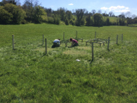

Biodiversity, resilience and food security: understanding the role of biodiversity in maintaining food production
People: Maja Ilić,
Amy Arnott,
Willson Gaul,
Mark Emmerson,
Paul Caplat,
Tim Benton,
Jon Yearsley
Past People: Hannah White,
Lupe Leon Sanchez,
Dina Sadykova,
Tomas Murray,
 #GrasslandResilience
#GrasslandResilience
Project Description

Agriculture and the environment is of great economic and cultural importance to the people of Ireland. In particular sustained
economic growth and food security both require agricultural production that is resilient to dramatic environmental changes. This project focuses on agricultural grassland productivity to investigate if the biodiversity surrounding farm-grasslands promote resilient agricultural productivity.
We will use information from satellite images (animation shown on the right), unmanned aerial drones and experimental plots. We will then produce maps of Ireland that look into the near-future, showing areas where production is riskier when faced with extreme events, such as the conditions that created the fodder crisis of 2012-13.
The animation on the right shows data from the MODIS data from the Terra and Aqua satellites for agricultural grassland in Ireland. The colour estimates plant productivity by measuring the 'greeness' of the land (white space correpsond to areas with little agricultural pasture, based on the CORINE land cover data). The greeness index displayed here is called EVI (Enhanced Vegetation Index).. EVI ranges from 0 to 1. Larger values of EVI approximately correspond to high plant productivity. In this animation each pixel is a 1 km square.
The graph above shows the mean EVI anomaly (solid line) across all 1 km squares of agricultural pasture in Ireland (the shaded region shows the variation across Ireland, 1 standard deviation). The fodder crisis of 2012-2013 is seen where the EVI anomaly becomes negative, indicating an extended period of unusually low grassland production for the time of year. However, not all locations were equally affected by the fodder crisis (the gray shaded region). This project is looking into the role of landscape biodiversity in this variation in the resilience of grassland production.
The EVI anomaly measures the deviation of grassland production away from the 10 year average (shown in the animation). Negative values of the anomaly represent low EVI values relative to the 10 year average for that location at that time of year. An anomaly less than -1 would be expected once every 6 years, given the observed historical year-to-year variation.
Multispectral Drone Images
Each experimental plot is being imaged in five wavelength bands (red, green, blue, red-edge and near infrared) using a multispectral camera
(Micasense RedEdge) mounted on a drone.
Coastway Surveys are performing this surveying for us (photo below).
An example of the images being obtained can be seen on the right. You can see the rectangular fence surrounding the 10m x 6m experimental plot, and the squares within the plot are the experimental treatments. The rectangles outside the experimental plot are the roofs from the drought shelters.
These images are equivalent to the images from MODIS but at a resolution that is 50 times finer. These images will be used to calculate vegetation indices that give detailed information on grass yield throughout the experiment.
Similar vegetation indices can be obtained from MODIS. Comparing aerial drome images to the MODIS satellite images will allow us to make better use of the MODIS data across the whole of Ireland.